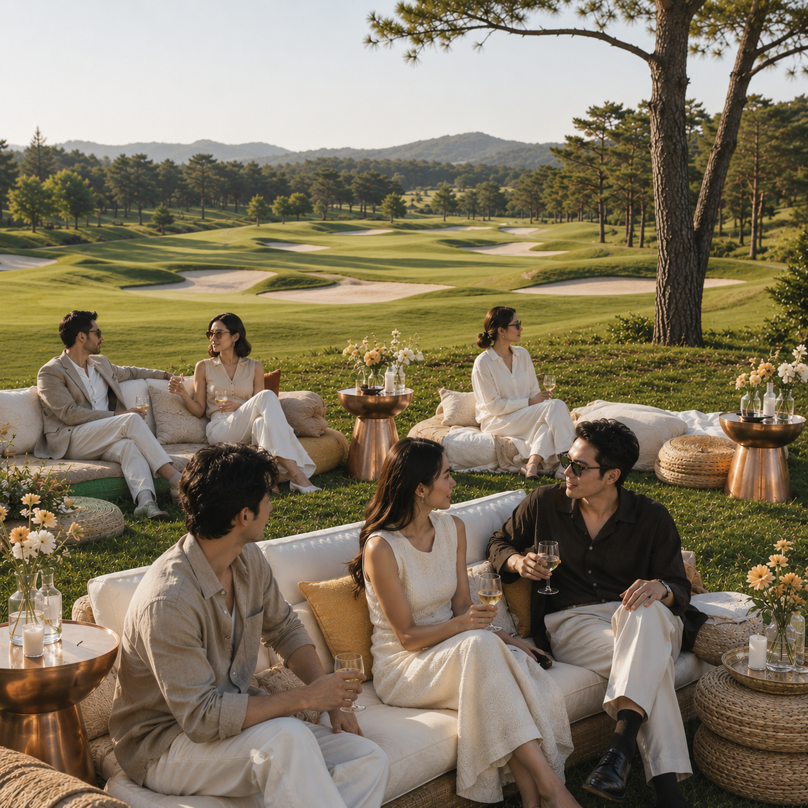
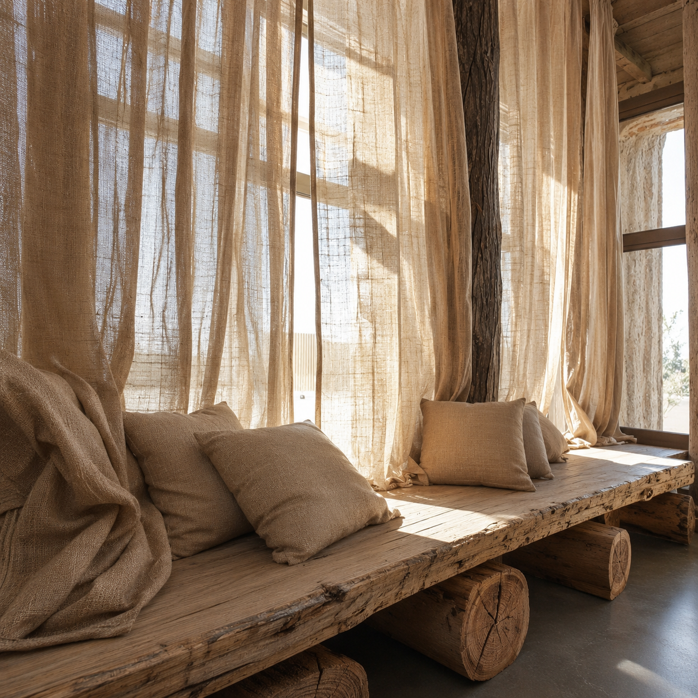
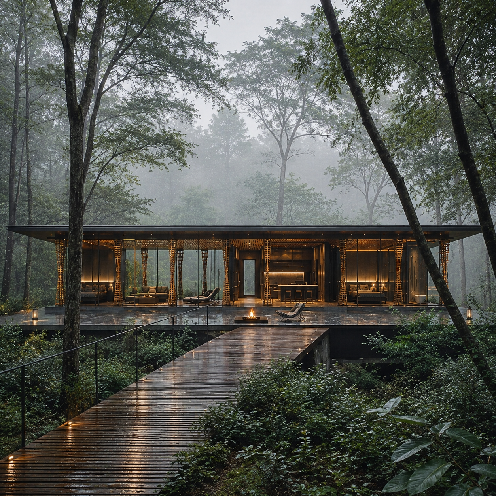
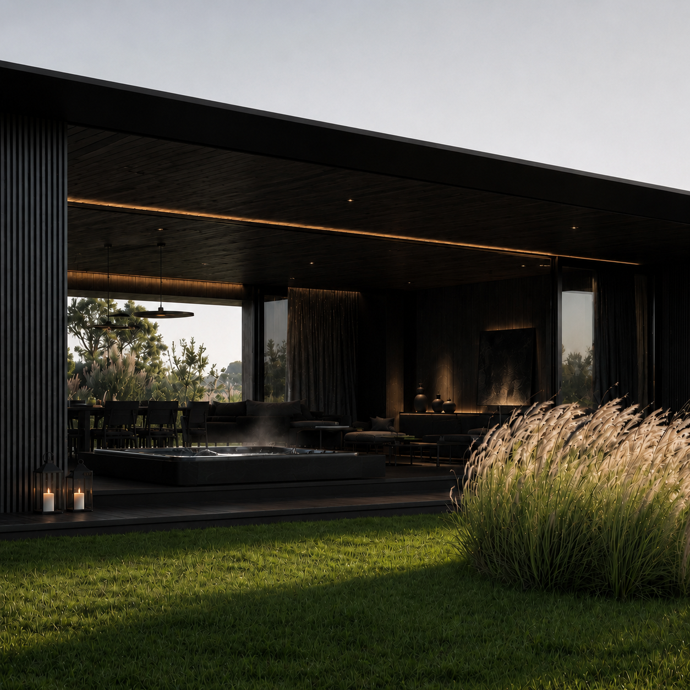
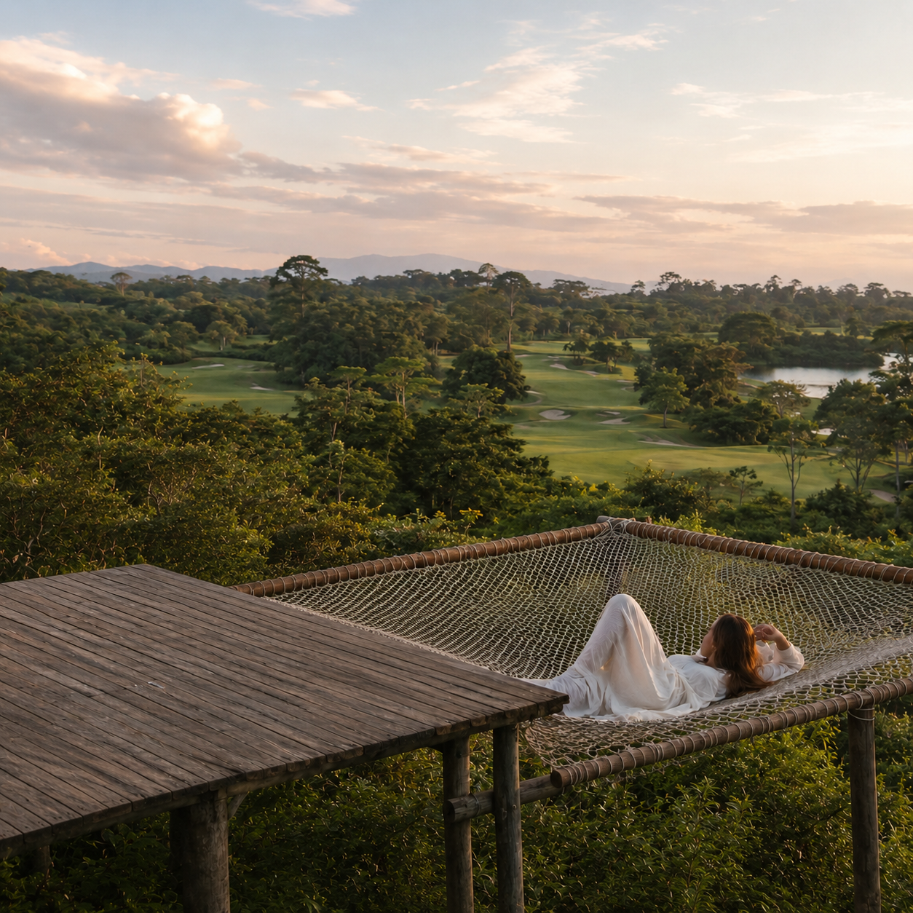

Nestled in Japan's pristine nature, Therman Wellness Resort delivers an unparalleled high-end retreat focused on mind-body rejuvenation, bespoke healing therapies, and refined Japanese hospitality.
Rooms held low against the slope,each one turned toward a different partof the landscape. Three types, all with a bathset at the window and a terrace facing the valley.
The bath is positioned where the boundary between inside and outside begins to disappear.
Warm water surrounds the body while the landscape remains fully present beyond the glass.
There is nothing else to attend to. The body slows, the view grows clearer and
bathing becomes a private ritual of release.
Private outdoor spaces sit within each villa as rooms without ceilings.
A jacuzzi, fire and places to rest are gathered together, sheltered from view but open to the air.
Everything needed for the day remains within reach, creating the feeling of entering a small world of your own
Each villa has a private pool reserved entirely for its guests. Surrounded by greenery,
the water becomes part of the landscape rather than a separate amenity.
Swim, float or remain still. Without shared hours or other people nearby, the body is free to follow its own pace.
Beyond the villa, the landscape opens into long views, changing weather and wide stretches of green. Nature is not presented as an attraction to visit, but as a constant presence throughout the stay.
Daily routines become quieter when they no longer need to be rushed. Washing, dressing
and preparing for the day unfold through natural materials, soft light and the view beyond the room.
Even the smallest rituals are given enough space to feel restorative.
Each villa is positioned independently, with space between one stay and the next.
Privacy is created through distance, orientation and the natural surroundings rather than through walls alone.
There are no shared corridors and no need to pass through crowded spaces.
The villa is reached quietly and left entirely to you.
Each villa changes with the world outside it. Winter light, summer greenery, rain and
mist alter the atmosphere of the rooms without changing their essential calm.
Warm interiors and wide windows allow the season to remain present,
making every stay feel connected to its particular moment.
As the light softens, the outdoor space becomes an extension of the villa. Sit beside the water,
remain outside after dinner or watch the landscape gradually disappear into darkness.

Privacy does not have to mean being alone. Villas create a secluded setting where couples,
families and friends can spend time together without the presence of the wider resort.
Conversation becomes unhurried, meals extend naturally and shared time feels
protected from everything beyond the villa.
THERMAN bedding, textiles and furniture bring warmth to the restrained interiors.
Natural textures, gentle weight and low, comfortable forms allow the room to feel settled rather than styled.
Every surface is considered in relation to the body, creating an environment
that supports deeper and more comfortable rest.

An outdoor shower brings an everyday ritual into direct contact with the landscape.
Water, air, sunlight and temperature are experienced together rather than separated by the room.
The villa is designed as a shelter rather than a barrier. Glass holds the weather at a comfortable distance
while keeping the surrounding trees, rain and changing light close.
Protected inside but visually connected to nature, guests can experience seclusion without feeling enclosed.
A private pool, jacuzzi, outdoor space and places to rest are brought together within the boundaries of each villa.
There is little reason to leave and no pressure to move through a programme.
The day can remain contained within one private environment, shaped only by what the body needs.
The approach to each villa creates a gradual transition away from the wider world.
A private path moves through the landscape before the entrance is revealed.
With every step, outside noise feels more distant. Arrival becomes the first part of the wellness experience
—a quiet passage into privacy, shelter and rest.

Open ground invites the body to move without urgency. A round of golf becomes time spent walking, breathing and observing changes in distance, weather and light.
THERMAN furniture is designed specifically for the way the villas are lived in.
Low proportions, generous surfaces and tactile materials keep the body close to the room and the view beyond it.
Nothing competes for attention. Each piece supports the act of sitting longer,
moving slower and feeling fully settled within the space.


The villa creates a place where two people can withdraw without feeling confined.
Shared moments unfold without schedules, interruptions or the need to be anywhere else.
Surrounded by open air and distant views, time together becomes quieter, slower and entirely your own.
There are places within each stay where nothing is expected of you. Lie back,
watch the light move across the landscape and allow the distance to hold your attention.
From the villa, the world beyond feels distant enough to release. Architecture recedes,
daily noise disappears and nature becomes the clearest presence.
THERMAN offers more than a private place to stay. It creates the feeling of being held
within your own landscape—secluded, restored and connected to something quieter than everyday life.
The room does not end at its walls. Morning opens directly onto forest, sky and distant ridgelines,
bringing the scale and stillness of nature into the most private part of the villa.
Every room rate carries the same set of inclusions, whichever type you choose.